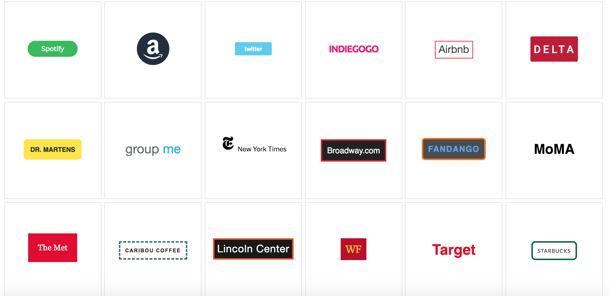
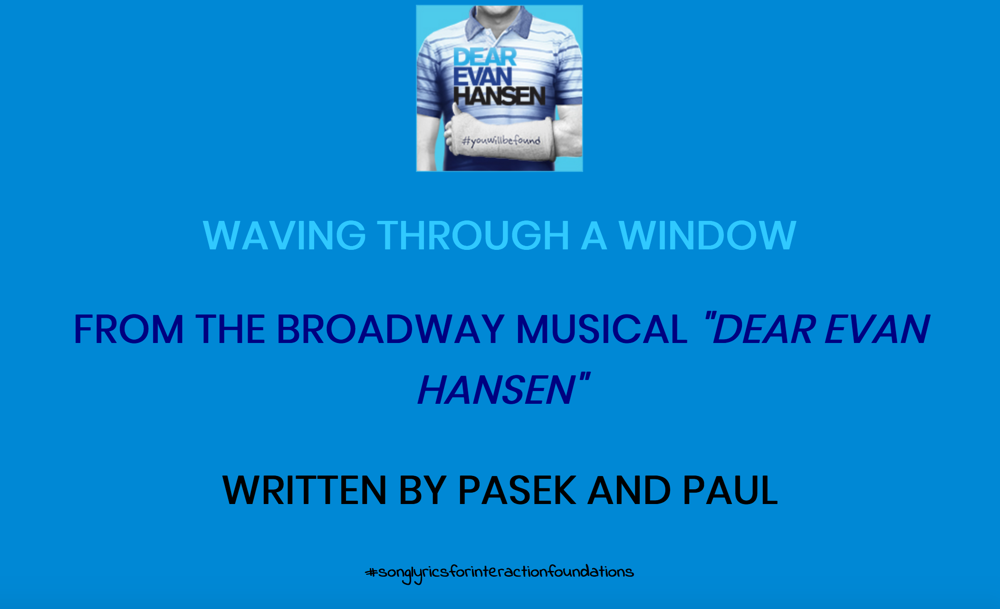
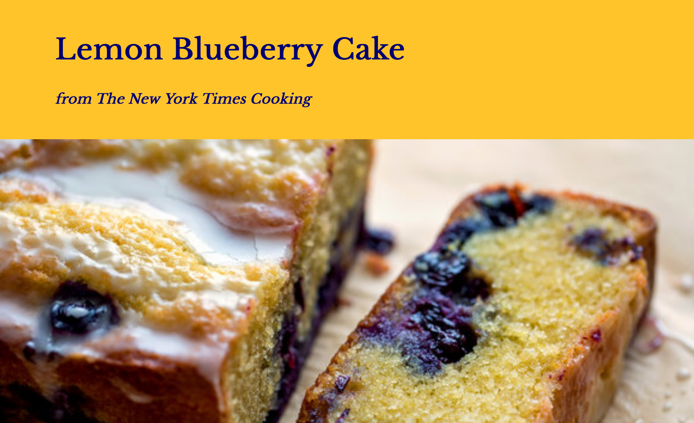
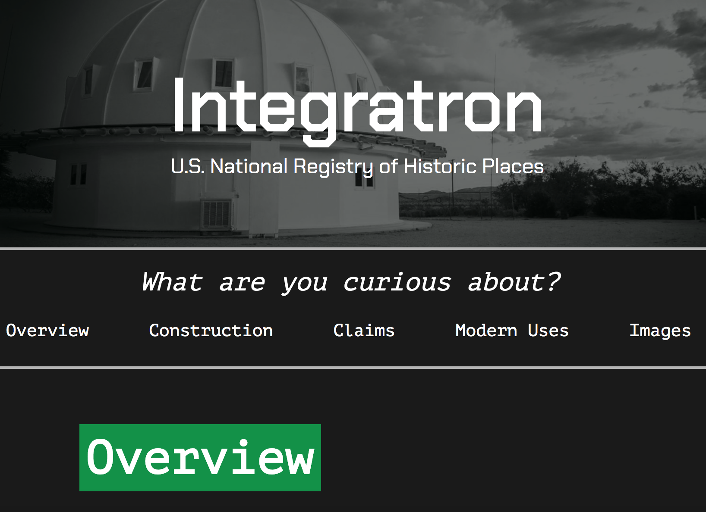

Brandon Krisko
Interaction Foundations - Fall 2018

I built a series of buttons linking to different websites, each captivating the design essence and tone of the accompanying website.

The lyrics to the song "Waving Through a Window" from the Broadway musical Dear Evan Hansen, presented with styled type.

Stylized recipe page designed for mobile devices. This piece started with wireframes and iterated twice based on feedback from users.
These are 3 postcards designed with type and image, built to be responsive at any browser width.

I built a fully functioning website at all browswer widths, under the direction of a creative director who planned the concept for the site. I worked through three iterations of this site, plus wireframes, based on critical feedback from the creative director.
Copyright 2018, Brandon Krisko
brandonkrisko@wustl.edu